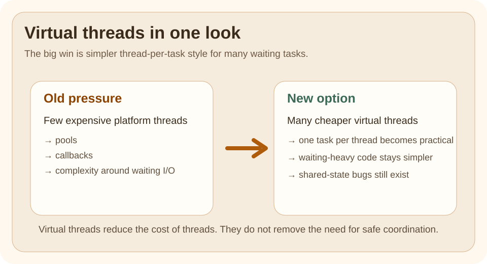

Static Topic Page
Why Virtual Threads Matter
The Problem
Traditional threads are expensive enough that teams started designing around the cost:
- thread pools
- callback-heavy code
- reactive complexity even when the business logic is simple
Virtual threads change that tradeoff for many request-per-task workloads.
Quick Visual

One glance should tell you the real story:
- platform threads are limited, expensive workers
- virtual threads are much lighter for waiting-heavy tasks
- the business code can stay direct and blocking-style
Run This Code
This example is best run locally on a modern JDK because it depends on newer Java support.
Expected Output
The main point is not a flashy output string.
The point is that many blocking tasks can be modeled with a much simpler one-task-per-thread style again.
❌ Bad Mental Model
The wrong mental model is "virtual threads make concurrency problems disappear."
They do not.
They reduce the cost of threads.
They do not remove:
- race conditions
- bad shared-state design
- blocking calls that pin platform resources in the wrong places
✅ Better Mental Model
Virtual threads reduce thread cost for many waiting tasks.
They do not remove the need for safe coordination, clear ownership, or good shared-state design.
Why This Works
Virtual threads make thread-per-task style practical again for many I/O-heavy workflows.
That often improves clarity because the code can read in straight lines instead of callback chains.
Comparison Snapshot
| Question | Platform thread | Virtual thread |
|---|---|---|
| Best for | long-lived heavier worker threads | many waiting tasks |
| Cost per thread | higher | much lower |
| Blocking style code | possible but costly at scale | practical again |
| Removes race conditions | no | no |
Performance Lens
The most useful benchmark question is not "which thread is faster?"
It is:
- how many waiting tasks can I model clearly
- what happens to throughput when many requests block on I/O
- does the simpler thread-per-task model lower code complexity
Virtual threads shine when most time is spent waiting, not burning CPU.
Benchmark Checklist
When you compare executor pools and virtual threads, measure:
- total concurrent requests handled
- average and tail latency
- memory growth
- blocked or pinned behavior
- code complexity and failure handling, not just raw timing
Use This When
- your tasks spend time waiting on I/O
- the one-request-one-thread model fits the business flow
- readability matters more than low-level concurrency tricks
Avoid This When
- the workload is dominated by heavy CPU computation
- you still have unsafe shared mutable state
- you have not checked whether frameworks and libraries are ready for the new model
Version Notes
Virtual threads became final in Java 21.
They are one of the most important changes in modern Java concurrency.
After Reading This, You Should Know
- virtual threads are still threads, not magic background jobs
- they reduce thread cost for waiting-heavy workloads
- they improve the cost model, but not the need for safe shared-state design
Next Topic
Read the executor-based virtual thread example next, then compare it with structured concurrency.